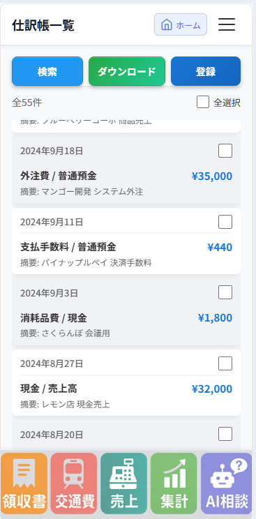
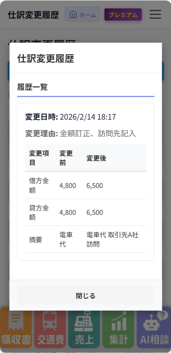
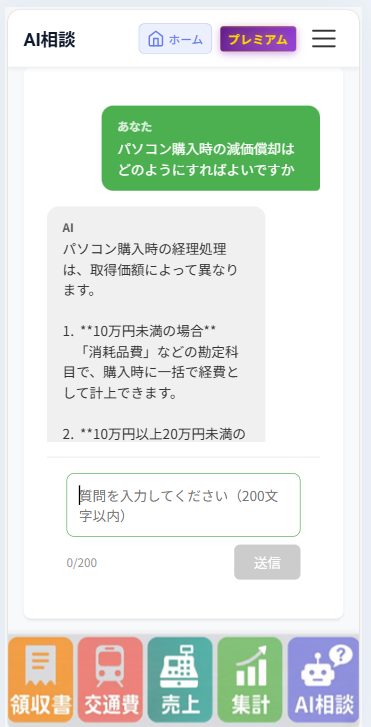
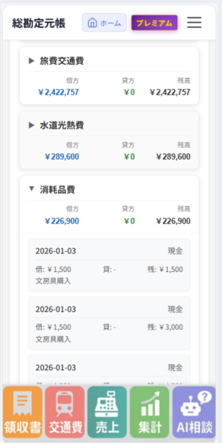

使いやすさだけを追い求めたアプリです。
普段はスマホで領収書・交通費・売上を登録。確定申告の時期は集計ボタンを押すだけで、試算表・P/L・B/Sまでまとまります。
訂正・削除の履歴が自動で残る改ざん防止にも対応。優良な電子帳簿の要件を満たす設計です。
データの保存
仕訳データ・領収書画像はクラウド上で安全に保存しています。必要な要件に配慮した設計で、いつでも検索・エクスポートが可能です。
技術とセキュリティ
実務と法対応を意識して開発しています。改ざん防止のための履歴管理や、電子帳簿保存法の要件を満たす運用をサポートします。
このツールでできること
シンプルな複式簿記で領収書・交通費・売上を仕訳帳に記録し、試算表・損益計算書・貸借対照表まで一貫して管理できます。個人事業主や小規模法人の確定申告の準備にそのまま使えます。
画面下部のボタンから、領収書の写真を撮る・交通費を登録・売上を登録。この3つを続けるだけです。
集計ボタンを押すだけ。試算表・損益計算書・貸借対照表がまとまり、申告書への転記やe-Taxの入力に使えます。申告手続きは各自で行ってください。




スマホではよく使う4つの操作を、画面下部のボタンからすぐに開けます。
使い方
領収書・交通費・売上を登録する
領収書は写真を撮るだけ。交通費・売上は画面から入力。スマホの画面下部のボタンでかんたんに登録できます。
集計ボタンを押す
確定申告の時期になったら、集計ボタン一つで試算表・損益計算書・貸借対照表がまとまります。
確定申告書に転記する
集計されたデータを確定申告書（紙またはe-Tax）に転記するだけ。申告手続きは各自で行ってください。
レシート読み取り（OCR）
領収書を撮影するだけで、日付・金額・店名などを自動抽出。仕訳の入力がぐっと楽になります。
読み取りのイメージ
レシート写真から日付・金額・取引先などを認識し、勘定科目の候補とあわせて仕訳案を表示。そのまま登録も、編集してから登録もできます。
誤認識したときは
画面からすぐに修正できます。日付・金額・勘定科目・取引先はいつでも編集可能。訂正履歴も残るので、優良な電子帳簿の要件を満たしたまま運用できます。
対応しているレシート
- コンビニ・スーパー・ドラッグストア
- 飲食店・カフェ
- 交通費（電車・バス・タクシー等の領収書）
- その他、日付・金額が記載された一般的な領収書
AIに相談できること
経理や確定申告で迷ったとき、アプリ内のAIにその場で質問できます。こんな相談が可能です。
-
「この支出は経費になりますか？」
経費計上の可否を、状況に合わせて相談できます。
-
「このレシートの勘定科目は何がよい？」
領収書の内容に合った勘定科目の候補を提案します。
-
「確定申告の準備で何をすればいい？」
申告までの流れや、このツールでできることを案内します。
安心のポイント — 優良な電子帳簿に対応
改ざん防止（訂正・削除履歴） NEW
優良な電子帳簿で特に重視される「改ざん防止」に、以下の要件で対応しています。
- ✓ 訂正・削除の履歴が自動で残る
- ✓ 変更前後の値が確認できる
- ✓ 変更日時（年月日時分）が記録される
- ✓ 履歴はユーザーが削除・改変できない
その他の要件
- ✓ 帳簿の検索（取引日・金額・取引先）
- ✓ 電子保存・クラウド保管・領収書画像の保存と改ざん担保
- ✓ CSVエクスポート・e-Taxで申告可能な運用に対応
確定申告の準備は紙でもe-Taxでも、転記するだけ
集計結果を申告書やe-Taxの画面に転記するだけで準備完了です。
- 紙の申告 — 試算表・P/L・B/SをCSVや画面で確認し、申告書に転記
- e-Tax — 集計結果を確認し、e-Taxの入力画面へ転記
料金プラン
副業や白色申告、経費の使用が少ない事業者様は、無料プランのまま使い続けることも可能です。登録件数に応じて必要な分だけ有料プランへ移行できます。
無料プランでできること
- 仕訳帳の登録・検索（登録に制限なし）
- 領収書の写真撮影・アップロード（OCRで自動仕訳。自動仕訳の件数に月ごとの上限あり）
- 交通費・売上の登録、一括登録
- 訂正・削除履歴の確認
- 仕訳辞書設定
- 総勘定元帳
- 試算表・損益計算書・貸借対照表
- 固定資産台帳
- 確定申告向け集計
- CSV出力
- AIに相談
※ 仕訳帳の登録に制限はありません。領収書の自動仕訳（OCR）が行える件数に月ごとの上限があります。詳しくはアプリ内のプラン画面でご確認ください。
- 登録数に応じたプランで、必要な分だけ利用
- 有料プランでは仕訳登録数の上限が増え、さらに使いやすくなります
アプリ内のプラン画面で、各プランの内容・料金をご確認いただけます。
※ 有料プランに移行すると、無料プランには戻れません。
さっそく使ってみましょう
無料で始めるアカウントをお持ちでない方は、無料プランでお試しください。